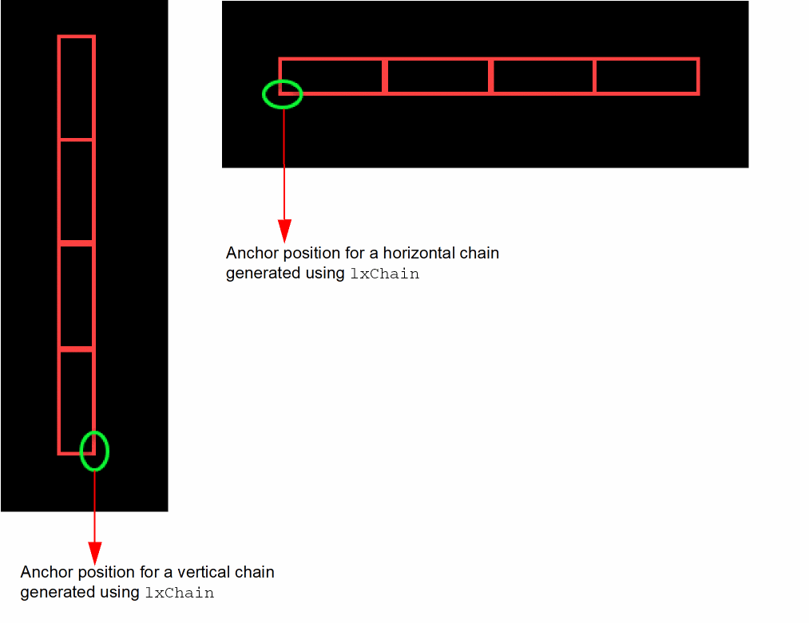

lxChain
lxChain(l_insts l_point[ ?groupsl_groups] [ ?preserveExistingChains { t | nil } ] [ ?useDeviceOrder { t | nil } ] [ ?interdigitateChains { t | nil } ] [ ?mirror { t | nil } ] [ ?permute { t | nil } ] [ ?allowSingleBulk { t | nil } ] [ ?dummyFlexBothEndNets { t | nil } ] [ ?syncChains { t | nil } ] [ ?mirrorEquivOrients { t | nil } ] [ ?preserveRows { t | nil } ] [ ?useAbutSpacing { t | nil } ] [ ?maxChainSizex_maxChainSize] [ ?contacts { 0 | 1 | 2 } ] [ ?chainAlignPMOS { Top | Center | Bottom } ] [ ?chainAlignNMOS { Top | Center | Bottom } ] [ ?chainLeftNet { Source | Drain | Either } ] [ ?abutStrategy { sdFirst | dummyFirst } ] [ ?optimize { Tracks | Abutments | Both } ] [ ?multiRow { NP | PN | NPPN | PNNP } ] [ ?effort { Minimal | Nominal | Maximal } ] ) =>l_chains/ nil
Description
Chains a list of instances and places the generated chains at the specified position in the layout. Using the optional arguments will override the existing settings of the environment variables: chainPreserveExistingChains, chainUseDeviceOrder, lxAllowPseudoParallelNets, chainMirror, chainPermutePins, chainAllowSingleBulk, chainDummyFlexBothEndNets, chainSyncChains, chainMirrorEquivOrients, chainPreserveRows,chainUseAbutSpacing, lxChainAlignPMOS, lxChainAlignNMOS, chainLeftNet and chainAbutStrategy.
Arguments
|
Defines the position of the first instance in the generated chain. For more information about this argument, see Positioning of Chains. |
|
|
List of groups where each group is a list of instances. Builds a group chain for each group. The group chains can be mirrored and are always preserved. |
|
|
Prevents existing chains from being broken.
If |
|
|
Maintains the relative starting positions of the specified instances when forming the chain. Instances are sorted in XY order of their origins (from lowest to highest) and the resultant list used to abut the devices from right to left. Note:
- If
- If
- If |
|
|
For more information about the behavior of this argument, see Mirroring and Permutation. |
|
|
For more information about the behavior of this argument, see Mirroring and Permutation. |
|
|
Abuts devices if only one of the devices has a bulk and the |
|
|
(IC6.1.8 Only) Controls whether the dummy devices can have different source/drain connectivity. |
|
|
Synchronizes chains by abutting the specified instances by columns. The instances are first arranged into rows and then abutted row-wise from right to left in each column pair.
The
The
The value of the For more information, see Synchronized Chaining. |
|
|
Mirrors to equivalent orientations. which means that Chaining mirrors
When set to |
|
|
Accepts multiple rows as input and chains each row using the optional parameters supplied and with |
|
|
Controls how chains are spaced.
If set to |
|
|
Defines the maximum chain size, specified using any integer value between |
|
|
Controls PMOS chaining alignment using values: |
|
|
Controls NMOS chaining alignment using values: |
|
|
Controls whether source or drain nets are optimized to the left of the generated chains. Set to
The default value is
|
|
|
Optimizes the chains by minimizing the number of tracks or maximizing the number abutments or both. |
|
|
Controls the row order from bottom to top for multi-row placement. |
|
|
Controls the effort applied during chaining. Increased effort can improve the quality of results, but it can be time-consuming. |
|
Value Returned
|
List of chains generated where each chain is identified as a list of database IDs. |
|
Examples
Example 1
lxChain(list(p0 p1 p2) 0:0 ?useDeviceOrder t ?mirror t ?permute t ?chainAlignPMOS “Center” ?chainLeftNet “Source”)
Chains devices “|P0”, “|P1” and “|P2” in XY order with odd devices mirrored and even devices permuted. The generated chains are placed at position 0:0 and are center-aligned with source nets optimized to the left.
Example 2
lxChain(list(n0 n1 n2) 5:5 ?preserveExistingChains t ?mirror nil ?permute t ?chainAlignNMOS “Top” ?chainLeftNet “Drain”)
Chains devices “N0”, “|N1” and “|N2” with all devices permuted and existing chains preserved. The generated chains are placed at position 5:5 and are top-aligned with drain nets optimized to the left.
Example 3
lxChain(list(p0 p1 p2 n0 n1 n2) 10:10 ?useDeviceOrder t ?mirror t ?permute nil ?multiRow “NPPN” ?optimize “Abutments” ?effort “Maximal”)
Chains devices “|P0”, “|P1”, “|P2” “N0”, “|N1” and “|N2” in XY order with odd devices mirrored and even devices not permuted. The generated chains are placed in multi-row pattern NPPN with the bottom row at position 10:10. Abutments are maximized with effort set to maximal for best quality of results.
Example 4
lxChain(geGetSelSet() 0:0 ?preserveRows t)
Sorts the selected set into row order and then chains each row using the default optional parameters with useDeviceOrder set. The lower left of the bottom row is positioned at 0:0.
lxChain(list(list(I0 I1) list(I2 I3 I4)) 0:0 ?preserveRows t)
Chains rows (I0 I1) and (I2 I3 I4) using the default optional parameters with useDeviceOrder set. The lower left of I2 is positioned at 0:0.
Example 5
lxChain(list(p0 p1 p2) 0:0 ?useAbutSpacing t)
Chains the named devices and spaces each chain using the abutment spacing value.
Example 6
lxChain(geGetSelSet() 0:0 ?useDeviceOrder t ?groups list(list(dbId1 dbId2) list(dbId3 dbId4 dbId5)))
Chains a list of instances into a group.
Additional Information
Positioning of Chains
The lxChain SKILL function uses the l_point argument to position the first instance of the generated chains.
- For horizontal devices, the position of the first instance of the chain is the lower left-corner of the bbox, as illustrated in the figure below.
-
For vertical devices, the position of the first instance of the chain is the lower right-corner of the bbox, as illustrated in the figure below.

Mirroring and Permutation
For mirroring and permutation, lxChain depends on the state of the ?mirror and ?permute arguments:
-
If both
?mirrorand?permutearguments are set tot, odd devices are mirrored and even devices are permuted. -
If the
?mirrorargument is set totand the?permuteargument is set tonil, odd devices are mirrored but even devices are not permuted. -
If the
?mirrorargument is set toniland the?permuteargument is set tot, all devices are permuted. -
If both the arguments are set to
nil, no devices are mirrored or permuted.
Synchronized Chaining
Synchronized chaining using the syncChains argument can help make a design more routable by allowing each column to be aligned on the same net for all the rows. Abutment in this case is performed in column pairs, not rows—abutting the specified instances from right to left, starting from the bottom most row in the column pair to the top most row, and using the specified mirror and permute options.
The abutment begins with looking for the common net that applies to instances in all the rows within the column pair.
-
Abutment is performed using the supplied
sdFirstordummyFirstabutStrategy. -
(IC6.1.8 Only) Abutment is performed using the
sdFirst abutStrategy.
dummyFirst abutStrategy is not possible, the column pair is unabutted.Example: SyncChaining
lxChain(list(list(dbId1, dbId2) list(dbId3, dbId4, dbId5)) 0:0 ?syncChains t)
where,
row1 = list(dbId1, dbId2)
row2 = list(dbId3, dbId4, dbId5)
Illustrates how the rows are used, if the list of rows is specified.
lxChain(list(dbId1, …, dbIdN) 0:0 ?syncChains t)
Illustrates how the instances are sorted into rows using the Y co-ordinate of the instance origin, if the flat instance list is specified.
Chaining Photonic Waveguide Instances and Top-Level Photonic Pins
To use the lxChain SKILL function for chaining waveguide instances and top-level photonic pins, you must have the Virtuoso_Photonics_Option license checked out to run the Virtuoso Photonics Solution.
None of the optional arguments of the lxChain SKILL function are supported for the Virtuoso Photonics Solution. For information on obtaining the required license, contact your local Cadence representative.
Related Topics
Return to top